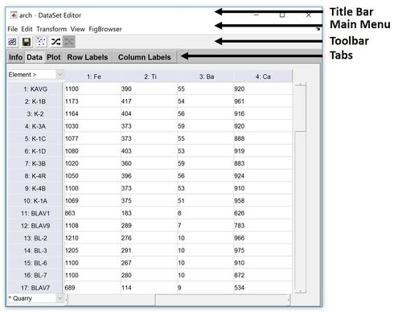
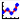
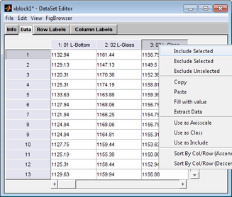
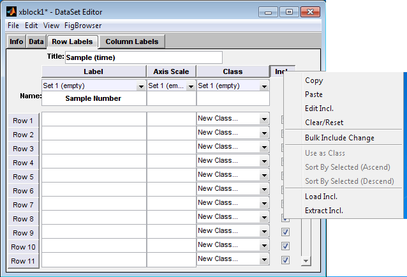

Table of Contents | Previous | Next
DataSet Editor Window
The DataSet Editor window is the standard interface that you use for creating and managing a DataSet in Solo. Multiple options are available for opening the DataSet Editor window. You can:
- Right-click on an item in the Workspace Browser window and on the context menu that opens, click Edit.
|
- Drag an item in the Workspace Browser window onto the DataSet Editor icon.
|
- Double-click the DataSet Editor icon in the Workspace Browser window, and on the window's main menu, click File > Load or File > Import From.
|
- Right-click on a data component in an analysis window (for example, the X calibration control in the PCA analysis window), and on the context menu that opens, click Edit.
|
- With data loaded in an analysis window, (for example, the X calibration control in the PCA analysis window or the X and Y calibration control in the PLS analysis window), on the Solo main menu, click Edit > Calibration > X-Block Data or Edit > Calibration > Y-Block Data.
|
DataSet Editor window layout
- DataSet Editor window
- 
The DataSet Editor window has three major components-the title bar, the main menu, and the tabs.
- Title bar - The phrase "DataSet Editor" appears in the title bar at the top of the DataSet Editor window, as well as the standard Window Minimize, Maximize, and Close buttons. The name of the DataSet that is currently loaded in the DataSet Editor window also appears in the title bar. For example, in the figure above, the DataSet named "conc" is currently loaded in the window.
|
- Note: If you launch the DataSet Editor window any other way than from an analysis window, and then modify the DataSet in any way, an asterisk (*) is displayed next to the DataSet name in the title bar. The asterisk indicates that modifications to the data are pending. Before you can close the DataSet Editor window, you must answer a prompt about saving the modified data. If you launch the DataSet Editor window from an analysis window, any modifications that you make to the data are immediate (no asterisk is displayed next to the DataSet name in the title bar) and you can close the window without having to answer a prompt about saving the data.
- Main menu - The DataSet Editor main menu is set up in a standard Windows menu format with menu commands grouped into menus (File, Edit, Transform, View, and FigBrowser) across the menu bar. The Load and Import options on the File menu are identical to the options on the File menu on the Workspace Browser window and the Analysis window. You use these options to load or import data from the Workspace Browser or from a file. You use the File > Save Data option to save a DataSet to the Workspace Browser or to a file. You use the File > Export to export a DataSet to a .csv or .xml file.
|
- Toolbar - The DataSet Editor toolbar has several buttons to quickly access common tasks without having to use the menus. These tasks include plotting, saving, deselecting items, shuffle dataset, and undo shuffle. Deselecting can be particularly useful when interacting with data both in a plot and the DataSet Editor at the same time. The shuffle dataset and undo shuffle buttons (introduced in PLS_Toolbox 8.3) allow to shuffle the dataset at a specified mode and undo the shuffle process, respectively.
|
- Tabs - The DataSet Editor window has four tabs-Info, Data, Plot, Row Labels, and Column Labels-each of which provides access to different content in the DataSet.
|
Info tab
When the DataSet Editor window opens, the Info tab is the active tab. (See the figure above.) The Info tab provides a high-level overview of the DataSet, including the DataSet name, the DataSet author, the data type and size in the DataSet for both included and excluded data, the DataSet creation date and time, the DataSet modification date and time, and a description of the DataSet.
The Info tab is interactive:
- To edit the DataSet name, author, or description, click the Edit button next to the appropriate field.
|
- To plot the included data in the DataSet, click the Plot button .
|
- To view the history of the DataSet, click the History button .
|
Plot tab
The Plot tab opens a plot of the data. This plot is linked to the DataSet Editor and will reflect selections made in either window.
Data tab
The Data tab displays the data in the DataSet in a spreadsheet format.
- DataSet Editor window, Data tab
- 
The tab is interactive. You can:
- Edit the data directly on this tab.
|
- Copy and paste rows and/or columns to and from other programs.
|
- Include and exclude rows and/or columns of data.
|
- Designate rows and/or columns as axis scales, classes, or the Include field. The results are reflected on either the Row Labels tab or the Column Labels tab.
|
All actions are available either from the Edit menu, or by right-clicking on a row or on a column header (as shown in the figure above) to open a context menu.
Row Labels tab/Column Labels tab
In a typical two-way DataSet, data mode 1 (the rows) represents the data samples and data mode 2 (the columns) represents the variables. The Row Labels tab and the Columns Labels tab-also known as the Mode Labels-provide access to the auxiliary "context" data for the Dataset, such as the labels for each sample, the axis scale, the classes, and the Include status for data. (Multi-way data has Label tabs for each mode of the data.)
- DataSet Editor window, Row Labels tab
- 
You use the information in these fields for:
- Managing the data. (For example, the Include field indicates whether a given row or column is to be included in an analysis.)
- Plotting the data (For example, some correction algorithms plot against the axis scale of the columns.)
- Analyzing the data. (For example, classification algorithms use the information in the Class field to identify class assignments.)
A variety of options are available for specifying and working with the information for these fields. You can:
- Manually enter the information in each field.
- Assign a name to a field set to assist in identifying content.
- Create sets for loading multiple versions of a field into a single DataSet.
- Load the fields from files or variables in the base workspace (as long as the information that is being loaded is of the correct size.)
- Note: When you load field information from one DataSet object (the source DataSet) into another DataSet (the target DataSet), the information is always loaded from the corresponding field and mode (row/column) of the source DataSet. To load information from a different mode, you must first Extract or Copy the contents from the source DataSet object, and then Load or Paste the content into the target DataSet object. You can always load or paste information from a non-DataSet object, even when the information is from an external program such as Microsoft Excel.
- Copy and paste information to and from the Label field, the Axis Scale field, the Classes field, and the Include field.
- Edit multiple fields in a single step.
All actions are available either from the Edit menu, or by right-clicking on a row or on a column header (as shown in the figure above) to open a context menu.
See also:
The DataSet Editor Edit menu has many powerful data manipulation options. Some of the more commonly used options include the following:
- Undo one action - Undo the last action performed (number of undo steps depends on size of data, large data has limited umber of undo steps).
|
- Fill with value - Fill selected rows/columns with a value.
|
- Edit Class Lookup Table - Edit class names.
|
- Include/Exclude - The include and exclude menu items can be used to adjust rows and columns include setting.
|
- Use as Axisscale/Class/Include - Moves the currently selected column or row into an axisscale, class, or include field.
|
- Hard Delete Excluded - Permanently removes excluded data from a DataSet object.
|
Operations that involve transforming data can be found in this menu. Commen tasks are:
- Sort by Selected (Ascend/Descend) - sort currently selected column or row in ascending or descending order.
|
- Shuffle and Undo Shuffle- randomly shuffle your data and undo this random shuffle.
|
- Transpose - Switches the rows and columns for a 2-way DataSet object.
|
- Reshape - resize data to different size with same number of elements.
|
- Flip - flip data along a user specified mode or dimension
|
- Permute modes - Changes the order of the data modes (dimensions).
|
- Fold into 3-way - Create a 3 dimensional dataset from 2D data by requesting number of "slabs" (mode 3) and dividing fist dimension (mode 1) into the "slabs". For example, with a 100x20 array, requesting 4 slabs would yield a 25x20x4 array.
|
- Convert to/from Image - Add image information to a dataset (note, this assumes your data is "unfolded"). See constructing images page for more information.
|